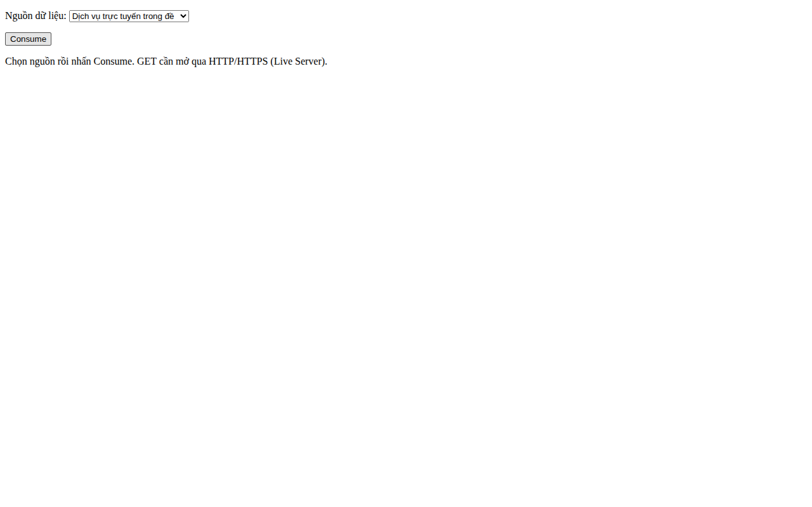
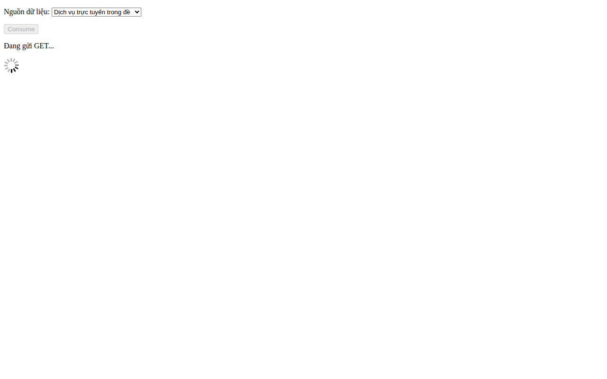
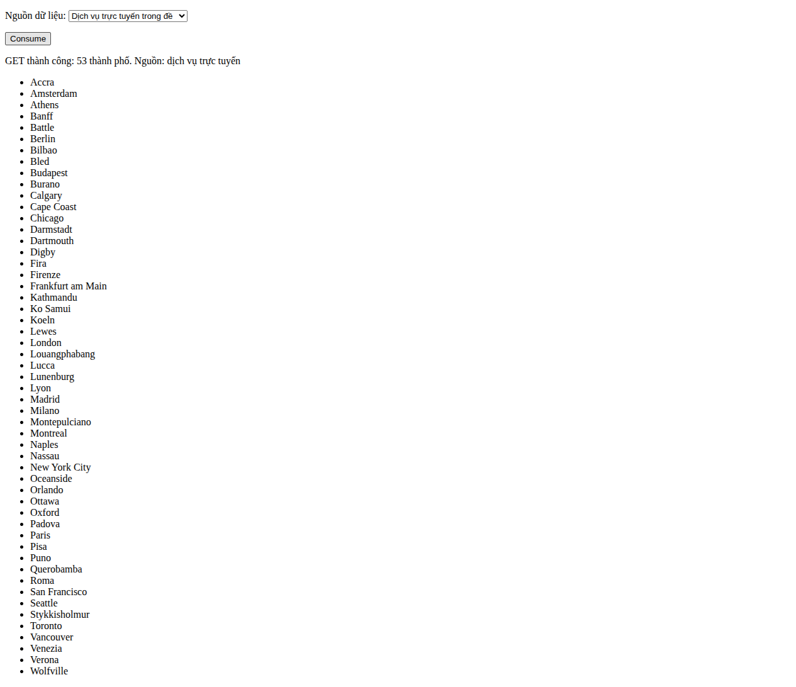
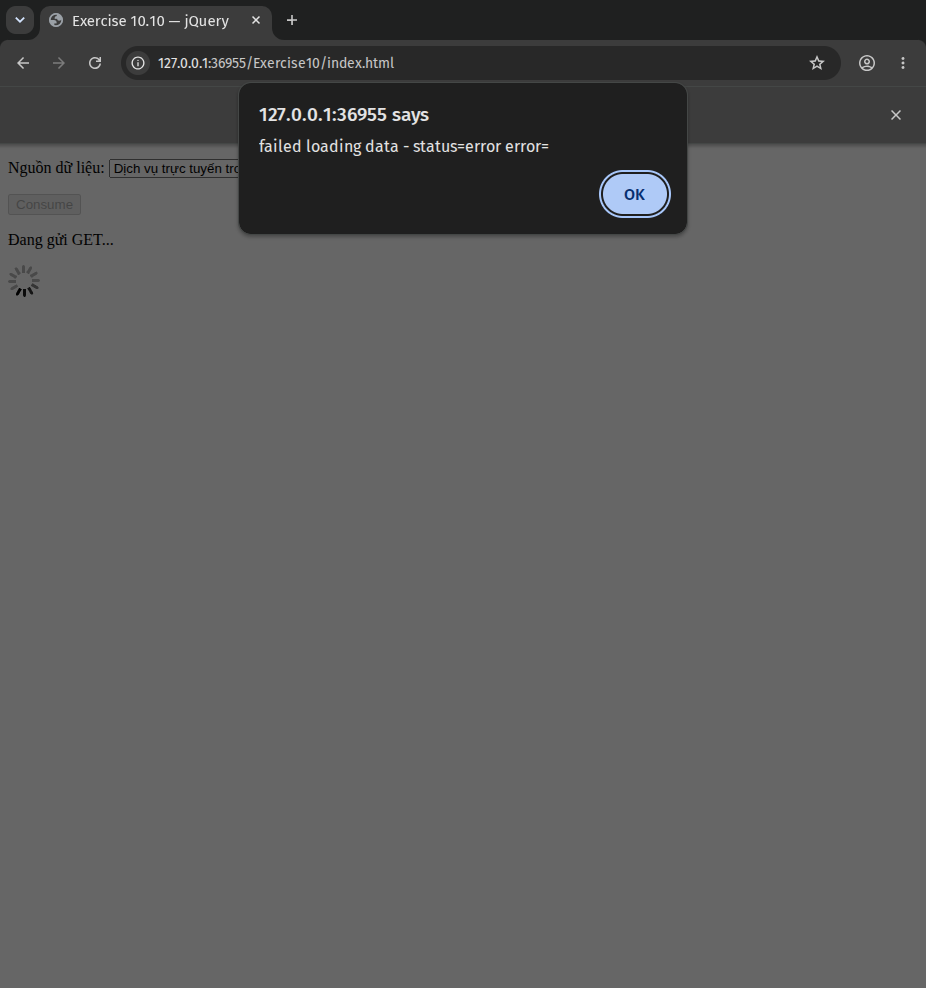
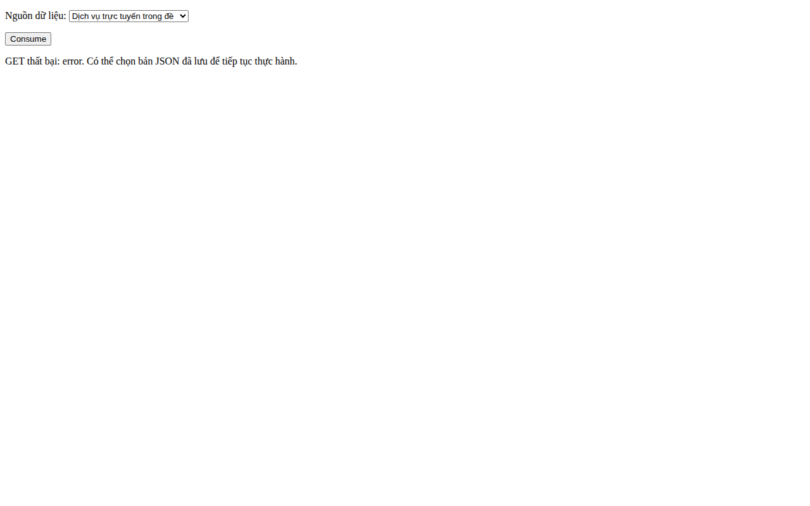
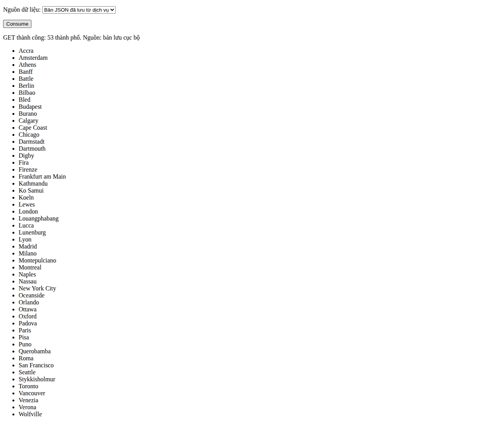

Ảnh minh chứng Exercise 10.10
Mở bài thực hành · Về Lab10

Ban đầu spinner bị ẩn, nút Consume sẵn sàng.
Đang GET thật dịch vụ: spinner hiển thị, nút Consume tạm khóa.
done tạo 53 li; always đã fadeOut spinner và mở lại nút.
Thử HTTPS bị lỗi chứng chỉ: fail hiển thị alert failed loading data; spinner vẫn chờ always.
Sau lỗi, always vẫn ẩn spinner và mở lại nút; trạng thái GET thất bại được giữ trên trang.
Bản lưu JSON chạy qua done và always; nguồn cục bộ được ghi rõ.